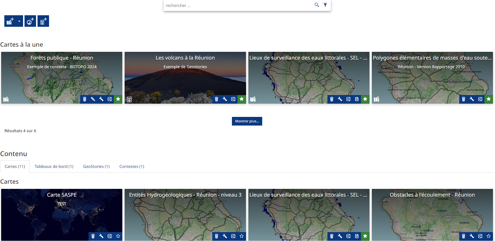

La cartothèque - page Application
Introduction
La page Application sert de cartotèque en lien avec le visualiseur. Dans cette cartothèque, 4 types de representations sont possibles : la carte simple avec le visualiseur, le tableau de bord, la GeoStory et le contexte réservé aux administrateurs.
{kind=link}
Dans cette cartothèque, 4 types de representations sont possibles : la carte simple avec le visualiseur, le tableau de bord, la GeoStory et le contexte réservé aux administrateurs.

Dashboard
Pour créer un dashboard, cliquez sur ce bouton
{kind=link}

Vous pouvez ajouter différents widgets en fonctions des données du catalogue, un tutoriel vous guide directement lorsque vous créer un dashboard, les graphiques réalisables sont les mêmes que pour les cartes. Les widgets se connectent aux données du serveur interne et non directement aux cartes réalisées.
Note
Les widgets sont dépéndants de la configuration de la donnée, ils peuvent ne pas être disponible.
Voici le lien de la documentation officiel pour aller dans le détail :
GeoStory
Pour créer un dashboard, cliquez sur ce bouton
{kind=link}

Avec les GeoStories, vous pouvez créer des documents textes en y intégrant des cartes intéractives. La gestion des composants se fait sur la gauche de l’interface qui sont : les titres, les bannières, les paragraphes, les sections immersives, les geocarrousels, les sections multimedia et les pages web. Un tutoriel vous guide directement lorsque vous créez une GeoStory.
Voici le lien de la documentation officiel pour aller dans le détail :